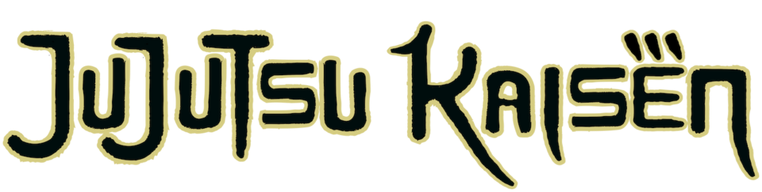
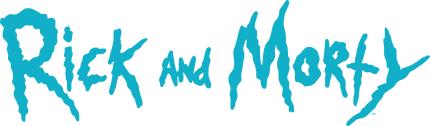

Consumo de endpoints, tratamento de imagens e estados de loading com a Naruto API.
Acessar ProjetoProjetos do Laboratório

Filtragem de dados, manipulação de arrays e exibição de detalhes com a Jujutsu Kaisen API.
Acessar Projeto
Paginação, busca avançada e manipulação de objetos aninhados com a Rick and Morty API.
Acessar ProjetoRequisição GET, renderização de listas e cards de personagens com a Dragon Ball API.
Acessar Projeto